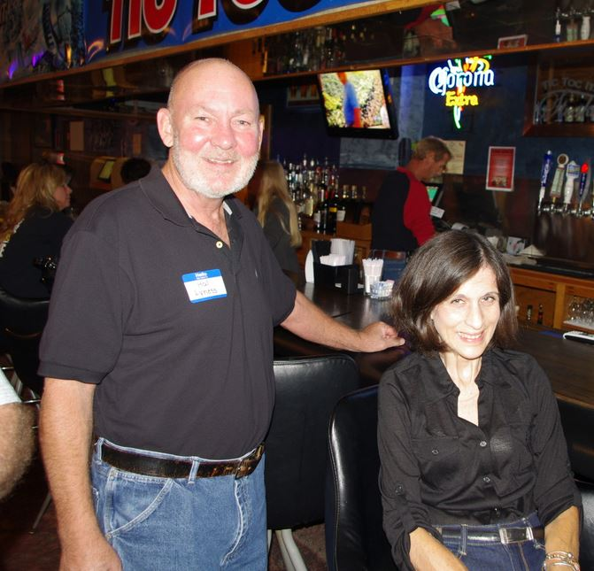
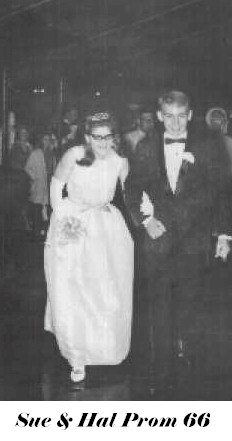

BHS 1967 Class Member
Hal Lloyd Lyness
 1967 |
Topper 2012 |
|  Topper & wife Ann at 2013 Baseball Reunion |
|
|  1966 Prom - Sue Howard and Hal |
1992 Baseball Reunion |
| 1967 |
Topper 2012 |
|  Topper & wife Ann at 2013 Baseball Reunion |
|
|  1966 Prom - Sue Howard and Hal |
1992 Baseball Reunion |